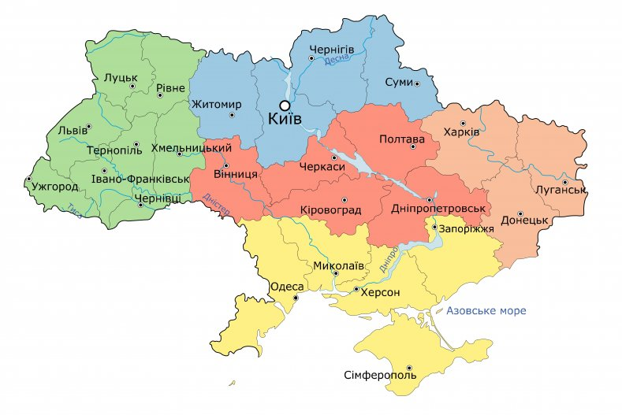

Фото нашого університету
Про себе
Мене звати Дмитрій, мені 18 років. Я народився в місті Охтирка, Сумської області там я ходив до дитячого садка "Берізка" та школи №3. Моя сім'я складається з чотирьох осіб: я, тато, мама та молодший брат.
Я середнього зросту, волосся темне, карі очі. Я полюбляю одягатися зручно, зазвичай це спортивний костюм та кросівки. Характер у мене спокійний, веселий.
Моє хобі
У дитинстві я ходив до музичної школи. Найбільший інтерес у мене до комп'ютера, мені подобається працювати за ним, а у вільний час грати в комп'ютерні ігри. До хоббі я б відніс щось робити своїми руками, також полюбляю слухати музику.
Програмування
<!DOCTYPE html>
<html lang="ua">
<head>
<meta charset="UTF-8">
<title>Навчальний файл HTML</title>
</head>
<body bgcolor="#d4c224" text="#0009ff">
<p align="center">
<b><font color="#00a816" face="time new roman" size="7">Розклад</font></b><br>
<i><u><font color="#0026ff" face="time new roman" size="10">занять на вівторок</font><u><i>
</p>
</body>
</html>
Емблема
Група 102-ТК
Я навчаюся в групі 102-ТК за спеціальністю комп'ютерна інженерія. В групі присутні 23 студента, 21 хлопець та 2 дівчини. Наша група дуже дружня, ми не тільки вчимося разом, а й спілкуємося один з одним. Допомагаемо з завданнями тим хто щось не зрозумів.
Фото
Фото нашого університету

Емблема університету

Карта України
Виконав студент групи 102-ТК
Писаренко Дмитрій